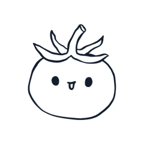
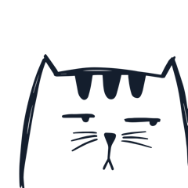
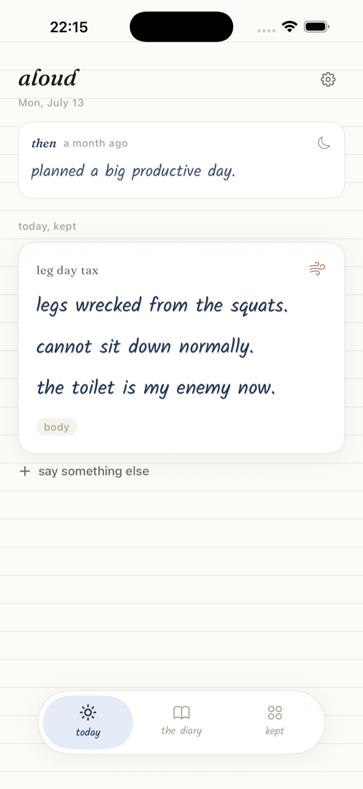
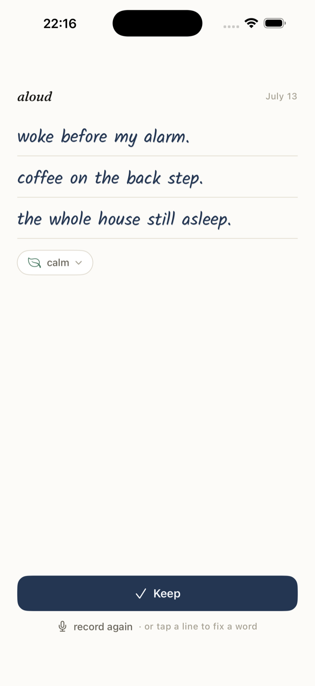
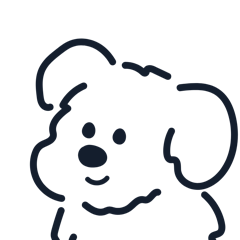
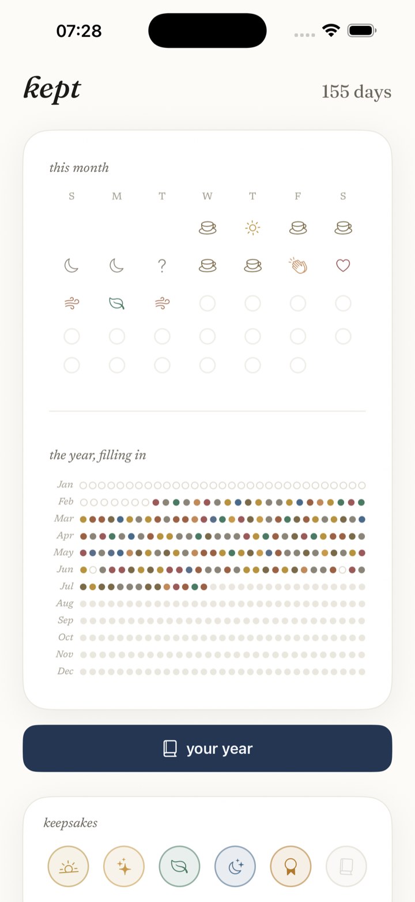
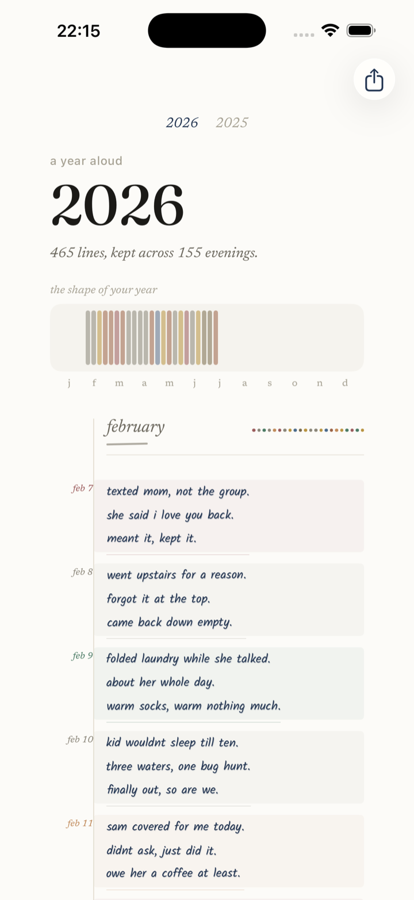
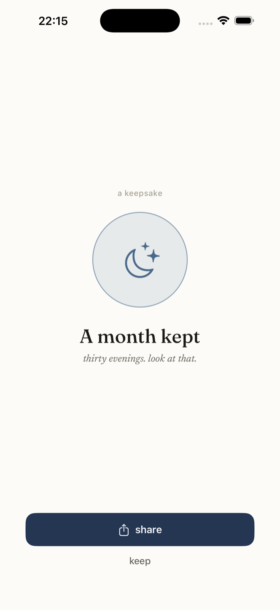

a voice-first diary for iPhone
say your day
out loud.
you speak for twenty seconds. it becomes a few handwritten lines, kept in a private notebook.
launching soon on iOS 26. free to download.
how it works
a diary you talk into.
hold, and talk
press the button and say how your day went, for about twenty seconds.
it becomes a few lines
your phone writes it down as a few lines in fountain-pen blue.
kept
each day is filed in a private notebook. look back by month or by year.
private by default
your voice becomes words right on your iPhone. nothing is uploaded, and no server holds your diary.

a mood a daythe year in dots
each entry keeps a mood. the year fills in as a grid of dots you can scroll back through.
a few lines
aloud keeps each day to a few lines.
keepsakes
small hand-drawn keepsakes appear as your notebook grows.
works offline
the recording and the writing both happen on your phone.

free on launchnothing to buy
aloud is free to download and use when it launches.
a look inside
what it looks like.
hover a screen to say hi.






the promise
your words stay on your phone.
aloud writes your voice into text on the device itself. your entries are stored on your iPhone, not on our computers. we do not have accounts, we do not read your diary, and we do not sell anything about you. read the full privacy policy.